3, rue Cardinal Gerlier, 69005 LYON

07 45 28 80 43

chats.loyasse@gmail.com


La seule volonté ne suffit pas à faire vivre une association ; nous avons besoin de la contribution de chacun d’entre vous.
Si vous désirez apporter une aide directe aux chats errants, nous pouvons vous mettre en contact avec les personnes qui les nourrissent.
(vous pourriez nourrir les chats errants en fonction de votre disponibilité)

(L'adhésion annuelle à l'association s'élève à 15 €, soit 1,25 € par mois.)
(des croquettes, des boîtes humides, des petites couvertures, des planches...)

(participer aux frais de stérilisations, aux soins vétérinaires et autres dépenses...)
N'hésitez pas à agir selon vos possibilités, quand vous pouvez et de la manière qui vous convient avec ce que vous avez sous la main. Chaque geste compte, même le plus modeste. Ensemble, nous pouvons faire une grande différence pour nos amis !
La générosité de chacun fait toute la différence pour nos amis félins. Si vous souhaitez apporter votre soutien de manière pratique et ciblée, découvrez notre wish-list régulièrement mise à jour avec les besoins actuels de nos petits protégés.
Rendez-vous sur notre Wish-List en cliquant ou en flashant le QR code
Faites votre choix parmi les articles
Au moment de la livraison, choisissez l'adresse "Association Les chats de loyasse - [Adresse Cadeau]"
Finalisez votre commande en validant la livraison
FAIRE UN DON OU ADHERER
PAR INTERNET
Sur la plateforme de paiement 100% sécurisée HelloAsso
Note : HelloAsso prend un pourboire pour son fonctionnement. Vous avez la possibilité de le modifier ou le supprimer dans le récapitulatif.
PAR CHÈQUE
À l'ordre de:
Association Les Chats de Loyasse
Et à faire parvenir à l'adresse:
3, rue Cardinal Gerlier
69005 LYON
Note : Lors de l’envoi de votre chèque, veuillez indiquer si celui-ci constitue un don ponctuel ou une adhésion à l’Association Les Chats de Loyasse. Si vous adhérez à notre association, n’oubliez pas de mentionner votre nom complet et votre adresse. Cela nous permettra de vous envoyer votre carte de membre
Votre soutien est précieux et nous vous en remercions chat'leureusement
3, rue Cardinal Gerlier, 69005 LYON
07 45 28 80 43
chats.loyasse@gmail.com